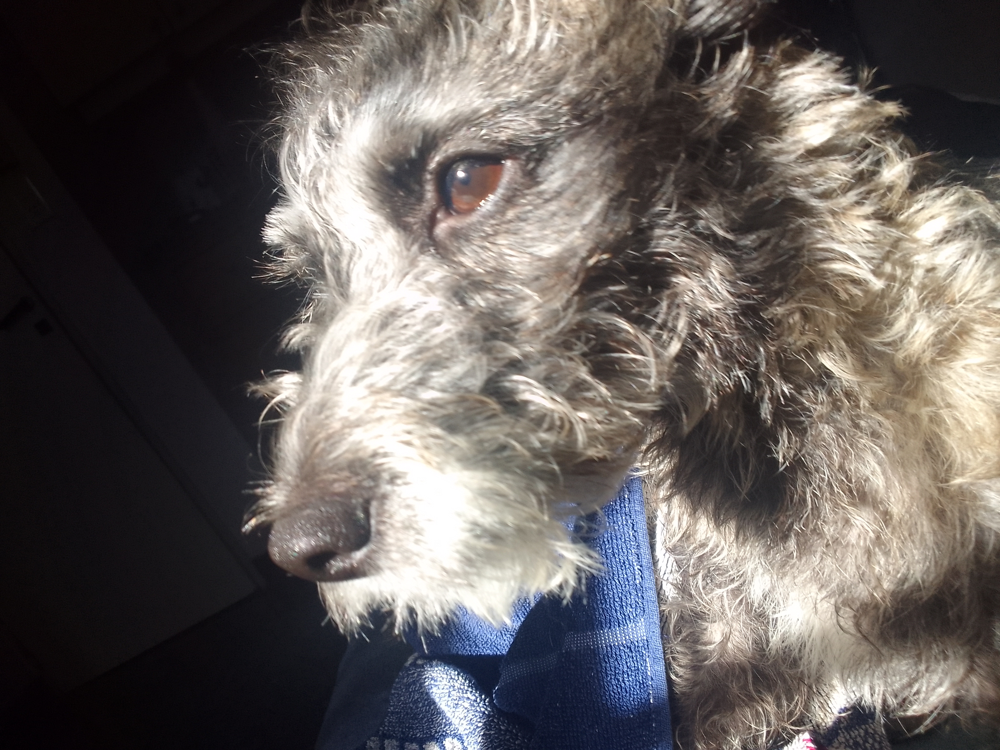
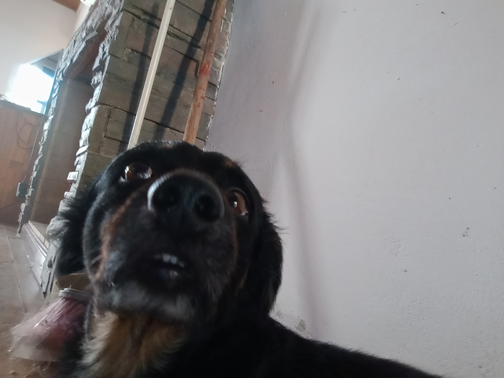
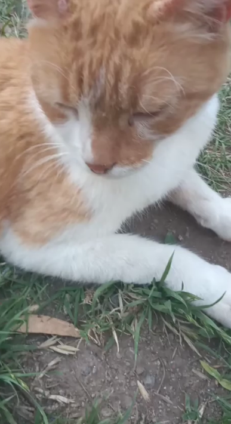
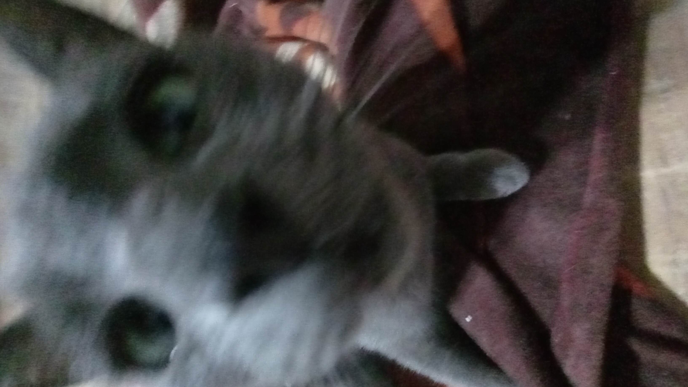

Juma
Se perdió por Libertador sur al frente de la Bancaria. Tiene el pelo duro, gris, blanco y negro. Está castrada.

Oliver
Se perdió en Plaza San Francisco. Tiene pelo negro con marrón y es de baja estatura.

Tin
Se perdió por Frontera al frente de la cancha de Sebastián.
Es naranja y blanco, tiene la nariz de dos colores y está medio ciego.

Chili
Se perdió por Plaza San Francisco. Es gris oscuro de ojos verde claro.